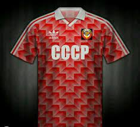
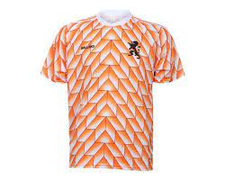

De finale van het Europees kampioenschap voetbal 1988 werd gehouden op 25 juni 1988 in het Olympiastadion in München. Nederland bereikte voor de eerste keer de finale en nam het op tegen de Sovjet-Unie, dat het EK al eens won in 1960 en verliezend finalist was in 1964 en 1972. In de groepsfase hadden Nederland en de Sovjet-Unie elkaar ook al getroffen. De Oost-Europeanen wonnen toen tegen de verhouding in met 1-0. In de finale trok Oranje aan het langste eind. Na doelpunten van Ruud Gullit en Marco van Basten werd het 2-0.
n het begin was de Sovjet-Unie de baas op het veld en moest Hans van Breukelen ingrijpen op een inzet van Igor Bilanov. Een sterke actie van Ruud Gullit brak de wedstrijd open, eerst werd hij gevloerd en de daaropvolgende vrije trap van dezelfde Gullit werd tot hoekschop verwerkt door Rinat Dasajev. Uit deze hoekschop scoorde Gullit ongedekt het openingsdoelpunt na doorkoppen van Marco van Basten. Na tien minuten in de tweede helft volgde nog een doelpunt voor Oranje; Adri van Tiggelen speelde de bal vanaf het midden naar de linkerzijde richting Arnold Mühren, die het leer vervolgens diagonaal naar Van Basten speelde. Van Basten trapte de bal in één keer - uit een schier onmogelijke hoek - over doelman Dasajev in het doel. De 2-0 stand bleef behouden tot het eind van de wedstrijd, hoewel een aan de Sovjet-Unie toegekende strafschop na een overtreding van doelman Hans van Breukelen bijna voor de aansluitingstreffer zorgde. Het schot van Bilanov werd echter door de Utrechtse doelman gestopt. Legendarisch was het vingertje, dat Van Breukelen toonde aan Bilanov onder het motto: ik weet wat je doet. Van Breukelen gaf later de credits aan zijn oude coach Jan Reker, die in een boekje alle strafschoppen opschreef. Daarvoor schoot Bilanov ook nog op de paal, in totaliteit het vierde schot op de paal tegen Oranje dat toernooi. Daarna kwam Nederland niet meer in gevaar en haalde het land zijn eerste (en voorlopig enige) hoofdprijs. Een dag later werden de spelers als helden ontvangen in hun land, vooral het rondje in de grachten van Amsterdam ging de geschiedenisboeken in als een hoogtepunt. 
